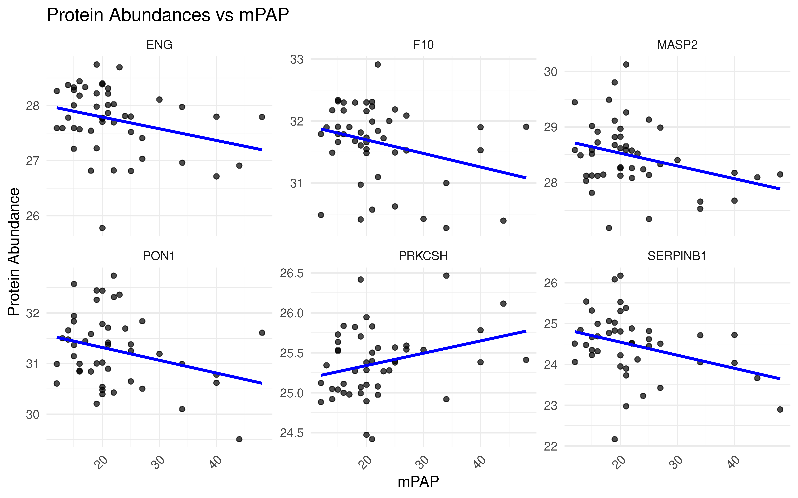
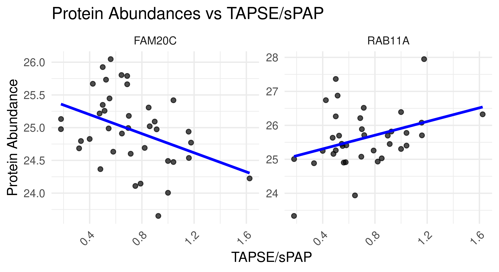
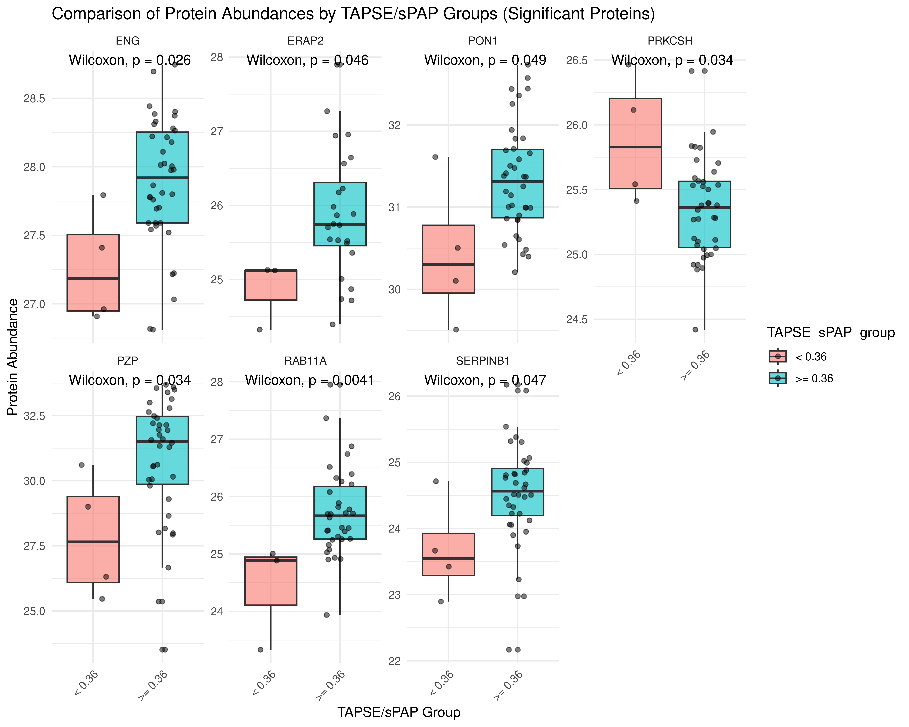

Last updated: 2024-09-19
Checks: 7 0
Knit directory: DCM_snRNAseq/
This reproducible R Markdown analysis was created with workflowr (version 1.7.1). The Checks tab describes the reproducibility checks that were applied when the results were created. The Past versions tab lists the development history.
Great! Since the R Markdown file has been committed to the Git repository, you know the exact version of the code that produced these results.
Great job! The global environment was empty. Objects defined in the global environment can affect the analysis in your R Markdown file in unknown ways. For reproduciblity it’s best to always run the code in an empty environment.
The command set.seed(20240606) was run prior to running
the code in the R Markdown file. Setting a seed ensures that any results
that rely on randomness, e.g. subsampling or permutations, are
reproducible.
Great job! Recording the operating system, R version, and package versions is critical for reproducibility.
Nice! There were no cached chunks for this analysis, so you can be confident that you successfully produced the results during this run.
Great job! Using relative paths to the files within your workflowr project makes it easier to run your code on other machines.
Great! You are using Git for version control. Tracking code development and connecting the code version to the results is critical for reproducibility.
The results in this page were generated with repository version 1a5eaa2. See the Past versions tab to see a history of the changes made to the R Markdown and HTML files.
Note that you need to be careful to ensure that all relevant files for
the analysis have been committed to Git prior to generating the results
(you can use wflow_publish or
wflow_git_commit). workflowr only checks the R Markdown
file, but you know if there are other scripts or data files that it
depends on. Below is the status of the Git repository when the results
were generated:
Ignored files:
Ignored: .Rhistory
Ignored: .Rproj.user/
Ignored: output/Comparison_RV_bulk_RNAseq/
Ignored: output/SSc_PAH/
Untracked files:
Untracked: GRCh38-2020-A_build/
Untracked: analysis/Comparison_LV.Rmd
Untracked: analysis/Comparison_RV_bulk_RNAseq.Rmd
Untracked: analysis/DA_DE_all_cell_types_and_parameters.Rmd
Untracked: analysis/DE_all_cell_types_mPAP.Rmd
Untracked: analysis/DE_mPAP_all_cell_types.Rmd
Untracked: analysis/VennDiagram.2024-09-16_14-12-56.160498.log
Untracked: analysis/VennDiagram.2024-09-16_14-13-17.340014.log
Untracked: analysis/VennDiagram.2024-09-16_14-13-57.942673.log
Untracked: analysis/VennDiagram.2024-09-16_14-22-50.621507.log
Untracked: analysis/VennDiagram.2024-09-16_14-24-47.010131.log
Untracked: analysis/VennDiagram.2024-09-18_11-22-29.278827.log
Untracked: analysis/omnipathr-log/
Untracked: code/Add_metadata.R
Untracked: code/Check DYSF.R
Untracked: code/Clustering_genes.R
Untracked: code/DE_5_percent.Rmd
Untracked: code/DE_5_percent.html
Untracked: code/DE_5_percent/
Untracked: code/DE_CM_test1.R
Untracked: code/DE_no_401.Rmd
Untracked: code/DE_no_401.html
Untracked: code/DE_no_401/
Untracked: code/Differential abundance test1.R
Untracked: code/Differential_Expression_edgeR_All.Rmd
Untracked: code/Differential_Expression_edgeR_All_2.Rmd
Untracked: code/Differential_Expression_edgeR_All_2.html
Untracked: code/Differential_Expression_edgeR_All_Age.Rmd
Untracked: code/Differential_Expression_edgeR_All_Age_2.Rmd
Untracked: code/Differential_Expression_edgeR_All_Age_2.html
Untracked: code/Differential_Expression_edgeR_All_groups.Rmd
Untracked: code/Differential_Expression_edgeR_All_groups.html
Untracked: code/Differential_Expression_edgeR_All_groups_2.Rmd
Untracked: code/Differential_Expression_edgeR_All_groups_2.html
Untracked: code/Differential_Expression_edgeR_All_groups_3.Rmd
Untracked: code/Differential_Expression_edgeR_All_groups_3.html
Untracked: code/PCA and CCA analysis test.R
Untracked: code/Pseudobulk DCM HC.R
Untracked: code/Published_heart_datasets_RV_vs_LV.Rmd
Untracked: code/QC_integration_annotation_orig.Rmd
Untracked: code/UpSet_plot_DEGs.Rmd
Untracked: code/Volcano_highlighted_genes.R
Untracked: code/ezInteractiveTable.Rmd
Untracked: code/ezInteractiveTable.html
Untracked: code/old.R
Untracked: core
Untracked: data/Cellbender_output/
Untracked: data/Cellranger_output/
Untracked: data/DCM_Clinical_data.xlsx
Untracked: data/DCM_Clinical_data_26.xlsx
Untracked: data/Homo_sapiens.GRCh38.93.gtf
Untracked: data/Human_plasma_proteome.xlsx
Untracked: data/Published_datasets/
Untracked: data/Raw/
Untracked: data/SSc-PAH/
Untracked: data/gencode.v46.chr_patch_hapl_scaff.annotation.gtf
Untracked: data/gencode.v46.chr_patch_hapl_scaff.basic.annotation.gtf
Untracked: data/refdata-gex-GRCh38-2020-A/
Untracked: omnipathr-log/
Untracked: output/Cardiomyocytes_DA_DE/
Untracked: output/Cardiomyocytes_DA_DE_26/
Untracked: output/Cardiomyocytes_subclustering/
Untracked: output/Cardiomyocytes_subclustering_26/
Untracked: output/Comparison_LV/
Untracked: output/DA_DE_all_cell_types_and_parameters/
Untracked: output/DE_all_cell_types_mPAP/
Untracked: output/DE_mPAP_all_cell_types/
Untracked: output/Differential_expression_edgeR_All/
Untracked: output/Differential_expression_edgeR_All_Age/
Untracked: output/QC_integration_annotation/
Untracked: output/QC_integration_annotation_26/
Untracked: output/Reichart_DE_DCMvsHC/
Untracked: output/UntitledR.R
Untracked: reference_sources/
Unstaged changes:
Modified: analysis/Cardiomyocytes_DA_DE.Rmd
Modified: analysis/Cardiomyocytes_DA_DE_26.Rmd
Deleted: analysis/Differential_Expression_edgeR_All.Rmd
Deleted: analysis/Differential_Expression_edgeR_All_Age.Rmd
Note that any generated files, e.g. HTML, png, CSS, etc., are not included in this status report because it is ok for generated content to have uncommitted changes.
These are the previous versions of the repository in which changes were
made to the R Markdown (analysis/SSc_PAH.Rmd) and HTML
(docs/SSc_PAH.html) files. If you’ve configured a remote
Git repository (see ?wflow_git_remote), click on the
hyperlinks in the table below to view the files as they were in that
past version.
| File | Version | Author | Date | Message |
|---|---|---|---|---|
| Rmd | 1a5eaa2 | GinoBonazza | 2024-09-19 | wflow_publish("analysis/SSc_PAH.Rmd") |
# Get current file name to make folder
current_file <- "SSc_PAH"
# Load libraries
library(here)
library(readr)
library(readxl)
library(xlsx)
library(Seurat)
library(DropletUtils)
library(Matrix)
library(scDblFinder)
library(scCustomize)
library(dplyr)
library(ggplot2)
library(magrittr)
library(tidyverse)
library(reshape2)
library(S4Vectors)
library(SingleCellExperiment)
library(pheatmap)
library(png)
library(gridExtra)
library(knitr)
library(scales)
library(RColorBrewer)
library(Matrix.utils)
library(tibble)
library(ggplot2)
library(scater)
library(patchwork)
library(statmod)
library(ArchR)
library(clustree)
library(harmony)
library(gprofiler2)
library(clusterProfiler)
library(org.Hs.eg.db)
library(AnnotationHub)
library(ReactomePA)
library(statmod)
library(edgeR)
library(speckle)
library(EnhancedVolcano)
library(decoupleR)
library(OmnipathR)
library(dorothea)
library(enrichplot)
library(png)
library(reactable)
library(UpSetR)
library(ComplexHeatmap)
library(biomaRt)
library(rtracklayer)
library(cowplot)
library(UniProt.ws)
library(ggpubr)
#Output paths
output_dir_data <- here::here("output", current_file)
if (!dir.exists(output_dir_data)) dir.create(output_dir_data)
if (!dir.exists(here::here("docs", "figure"))) dir.create(here::here("docs", "figure"))
output_dir_figs <- here::here("docs", "figure", paste0(current_file, ".Rmd"))
if (!dir.exists(output_dir_figs)) dir.create(output_dir_figs)Load proteomics dataset and patients clinical data
norm_abundances <- read_excel(path = here::here("data", "SSc-PAH", "DE_Groups_vs_Controls.xlsx"), sheet = "normalized_abundances_matrix")
clinical_data <- read_excel(path = here::here("data", "SSc-PAH", "Zurich_47_PAH_RHC_sample_list_CB040723_CLINICAL DATA_update20240109.xlsx"))Convert protein ids to gene names
norm_abundances <- norm_abundances %>%
mutate(gene_name = str_extract(description, "(?<=GN=)[^ ]+")) %>%
dplyr::select(gene_name, everything())Load output of RV DE analysis
cluster_names <- c("Cardiomyocytes", "Fibroblasts", "Endothelial_cells", "Pericytes", "Macrophages", "Lymphocytes", "Smooth_muscle_cells", "Neuronal_cells", "Endocardial_cells")signif <- list()
for (i in seq_along(cluster_names)) {
signif[[i]] <- read.csv(here::here("output", "DA_DE_all_cell_types_and_parameters", paste0(cluster_names[i], "_DE_Significant_mPAP_mmHg.csv")))
names(signif)[i] <- cluster_names[i]
}CM_signif_cluster <- read.csv(here::here("output", "Cardiomyocytes_DA_DE_26", "CM_signif_cluster.csv"))Add info about overlap with SSc serum proteomics dataset
CM_signif_cluster$SSc_plasma <- ifelse(CM_signif_cluster$gene %in% norm_abundances$gene_name, "Yes", "No")
table(CM_signif_cluster$SSc_plasma)
No Yes
4025 54 CM_signif_SSc <- dplyr::filter(CM_signif_cluster, SSc_plasma == "Yes")Join the clinical data and norm_abundances data frames
df_proteins <- norm_abundances %>%
dplyr::select(-gene_name, -description, -IDcolumn, -REV, -CON) %>%
column_to_rownames("protein_Id") %>%
t() %>%
as.data.frame()
df_proteins$Barcode <- rownames(df_proteins)
clinical_data <- as.data.frame(clinical_data)
rownames(clinical_data) <- clinical_data$Barcode
proteomics_combined <- merge(df_proteins, clinical_data, by = "Barcode")Correlation with mPAP
protein_id_of_interest <- norm_abundances %>%
dplyr::filter(gene_name %in% CM_signif_SSc$gene) %>%
pull(protein_Id)
proteins_of_interest <- proteomics_combined[, colnames(proteomics_combined) %in% protein_id_of_interest]
mpap <- proteomics_combined$`PAP mean (mmHg)`
cor_results <- list()
p_values <- list()
for (protein in colnames(proteins_of_interest)) {
test <- cor.test(proteins_of_interest[[protein]], mpap, method = "pearson")
cor_results[[protein]] <- test$estimate
p_values[[protein]] <- test$p.value
}
cor_results_df <- data.frame(
Protein = colnames(proteins_of_interest),
Correlation_with_mPAP = unlist(cor_results),
P_value = unlist(p_values)
)
protein_to_gene <- setNames(norm_abundances$gene_name, norm_abundances$protein_Id)
cor_results_df$gene_name <- protein_to_gene[cor_results_df$Protein]
CM_signif_SSc_mPAP <- left_join(CM_signif_SSc, cor_results_df, by = c("gene" = "gene_name"))
CM_signif_SSc_mPAP_signif <- dplyr::filter(CM_signif_SSc_mPAP, P_value < 0.05 & sign(Correlation_with_mPAP) == sign(logFC))significant_proteins <- CM_signif_SSc_mPAP_signif$Protein
plot_data <- proteomics_combined %>%
dplyr::select(Barcode, `PAP mean (mmHg)`, all_of(protein_id_of_interest)) %>%
gather(key = "protein", value = "abundance", -Barcode, -`PAP mean (mmHg)`) %>%
dplyr::filter(protein %in% significant_proteins)
# Add gene names to the plot_data for better labels
plot_data <- plot_data %>%
mutate(gene_name = protein_to_gene[protein])
ggplot(plot_data, aes(x = `PAP mean (mmHg)`, y = abundance)) +
geom_point(alpha = 0.7) +
geom_smooth(method = "lm", color = "blue", se = FALSE) + # line of best fit
facet_wrap(~ gene_name, scales = "free_y") + # create a subplot for each protein
theme_minimal() +
labs(x = "mPAP", y = "Protein Abundance",
title = "Protein Abundances vs mPAP") +
theme(axis.text.x = element_text(angle = 45, hjust = 1))
reactable(CM_signif_SSc_mPAP_signif,
filterable = TRUE,
searchable = TRUE,
showPageSizeOptions = TRUE)Correlation with mPAP
proteomics_combined$TAPSE_sPAP <- proteomics_combined$`TAPSE: tricuspid annular plane systolic excursion in cm`/proteomics_combined$sPAP_ECHO*10
TAPSE_sPAP <- proteomics_combined$TAPSE_sPAP
cor_results <- list()
p_values <- list()
for (protein in colnames(proteins_of_interest)) {
test <- cor.test(proteins_of_interest[[protein]], TAPSE_sPAP, method = "pearson")
cor_results[[protein]] <- test$estimate
p_values[[protein]] <- test$p.value
}
cor_results_df <- data.frame(
Protein = colnames(proteins_of_interest),
Correlation_with_TAPSE_sPAP = unlist(cor_results),
P_value = unlist(p_values)
)
protein_to_gene <- setNames(norm_abundances$gene_name, norm_abundances$protein_Id)
cor_results_df$gene_name <- protein_to_gene[cor_results_df$Protein]
CM_signif_SSc_TAPSE_sPAP <- left_join(CM_signif_SSc, cor_results_df, by = c("gene" = "gene_name"))
CM_signif_SSc_TAPSE_sPAP_signif <- dplyr::filter(CM_signif_SSc_TAPSE_sPAP, P_value < 0.05 & !sign(Correlation_with_TAPSE_sPAP) == sign(logFC))significant_proteins <- CM_signif_SSc_TAPSE_sPAP_signif$Protein
plot_data <- proteomics_combined %>%
dplyr::select(Barcode, TAPSE_sPAP, all_of(protein_id_of_interest)) %>%
gather(key = "protein", value = "abundance", -Barcode, -TAPSE_sPAP) %>%
dplyr::filter(protein %in% significant_proteins)
# Add gene names to the plot_data for better labels
plot_data <- plot_data %>%
mutate(gene_name = protein_to_gene[protein])
ggplot(plot_data, aes(x = TAPSE_sPAP, y = abundance)) +
geom_point(alpha = 0.7) +
geom_smooth(method = "lm", color = "blue", se = FALSE) + # line of best fit
facet_wrap(~ gene_name, scales = "free_y") + # create a subplot for each protein
theme_minimal() +
labs(x = "TAPSE/sPAP", y = "Protein Abundance",
title = "Protein Abundances vs TAPSE/sPAP") +
theme(axis.text.x = element_text(angle = 45, hjust = 1))
reactable(CM_signif_SSc_TAPSE_sPAP_signif,
filterable = TRUE,
searchable = TRUE,
showPageSizeOptions = TRUE)proteomics_combined <- proteomics_combined %>%
mutate(TAPSE_sPAP_group = ifelse(TAPSE_sPAP < 0.36, "< 0.36", ">= 0.36"))
gene_to_protein <- setNames(norm_abundances$protein_Id, norm_abundances$gene_name)
CM_signif_SSc$protein <- gene_to_protein[CM_signif_SSc$gene]
significant_proteins <- CM_signif_SSc$protein
# Create a dataframe to store p-values, test results, and mean differences
test_results <- data.frame(
Protein = character(),
p_value = numeric(),
mean_diff = numeric(), # Column for mean differences
stringsAsFactors = FALSE
)
# Loop through each significant protein and perform a Wilcoxon test
for (protein in significant_proteins) {
# Extract protein abundances for the current protein
protein_abundance <- proteomics_combined[[protein]]
# Exclude rows with missing values (NA)
data_for_test <- proteomics_combined %>%
dplyr::select(TAPSE_sPAP_group, all_of(protein)) %>%
dplyr::filter(!is.na(protein_abundance), !is.na(TAPSE_sPAP_group))
# Ensure that the grouping factor still has two levels after filtering
if (length(unique(data_for_test$TAPSE_sPAP_group)) == 2) {
# Perform Wilcoxon test
wilcox_test <- wilcox.test(data_for_test[[protein]] ~ data_for_test$TAPSE_sPAP_group)
# Calculate means for each group
group_means <- data_for_test %>%
group_by(TAPSE_sPAP_group) %>%
summarise(mean_abundance = mean(!!sym(protein), na.rm = TRUE)) # Calculate means
mean_diff <- diff(group_means$mean_abundance) # Difference between group means
# Store the results
test_results <- test_results %>%
add_row(Protein = protein, p_value = wilcox_test$p.value, mean_diff = mean_diff)
} else {
# If there are not enough levels (i.e., only one group after filtering), skip this protein
test_results <- test_results %>%
add_row(Protein = protein, p_value = NA, mean_diff = NA) # Add NA for proteins that couldn't be tested
}
}
CM_signif_SSc_TAPSE_sPAP_group <- left_join(CM_signif_SSc, test_results, by = c("protein" = "Protein"))
CM_signif_SSc_TAPSE_sPAP_group_signif <- dplyr::filter(CM_signif_SSc_TAPSE_sPAP_group, p_value < 0.05 & !sign(mean_diff) == sign(logFC))
# Filter significant proteins (p-value < 0.05)
significant_proteins_filtered <- test_results %>%
filter(!is.na(p_value), p_value < 0.05)# Reshape data for plotting
plot_data <- proteomics_combined %>%
dplyr::select(Barcode, TAPSE_sPAP_group, all_of(CM_signif_SSc_TAPSE_sPAP_group_signif$protein)) %>%
gather(key = "protein", value = "abundance", -Barcode, -TAPSE_sPAP_group) %>%
mutate(gene_name = protein_to_gene[protein])
plot_data_clean <- plot_data %>%
dplyr::filter(!is.na(abundance), !is.na(TAPSE_sPAP_group))
y_max <- plot_data_clean %>%
dplyr::group_by(gene_name) %>%
dplyr::summarize(max_abundance = max(abundance, na.rm = TRUE))
# Plot boxplots for significant proteins with cleaned data
ggplot(plot_data_clean, aes(x = TAPSE_sPAP_group, y = abundance, fill = TAPSE_sPAP_group)) +
geom_boxplot(alpha = 0.6) + # Boxplot for distribution of protein abundances
geom_jitter(width = 0.2, alpha = 0.5) + # Jitter points for individual patients
facet_wrap(~ gene_name, scales = "free_y", ncol = 4) + # Create separate plots for each significant protein with 4 columns
theme_minimal() +
labs(x = "TAPSE/sPAP Group", y = "Protein Abundance",
title = "Comparison of Protein Abundances by TAPSE/sPAP Groups (Significant Proteins)") +
theme(axis.text.x = element_text(angle = 45, hjust = 1)) +
stat_compare_means(method = "wilcox.test"
# , label.y = y_max$max_abundance + 0.4* y_max$max_abundance
) # Move p-values above the dots
sessionInfo()R version 4.3.1 (2023-06-16)
Platform: x86_64-pc-linux-gnu (64-bit)
Running under: Ubuntu 22.04.3 LTS
Matrix products: default
BLAS: /usr/lib/x86_64-linux-gnu/openblas-pthread/libblas.so.3
LAPACK: /usr/lib/x86_64-linux-gnu/openblas-pthread/libopenblasp-r0.3.20.so; LAPACK version 3.10.0
locale:
[1] LC_CTYPE=en_US.UTF-8 LC_NUMERIC=C
[3] LC_TIME=en_US.UTF-8 LC_COLLATE=en_US.UTF-8
[5] LC_MONETARY=en_US.UTF-8 LC_MESSAGES=en_US.UTF-8
[7] LC_PAPER=en_US.UTF-8 LC_NAME=en_US.UTF-8
[9] LC_ADDRESS=en_US.UTF-8 LC_TELEPHONE=en_US.UTF-8
[11] LC_MEASUREMENT=en_US.UTF-8 LC_IDENTIFICATION=en_US.UTF-8
time zone: Etc/UTC
tzcode source: system (glibc)
attached base packages:
[1] grid stats4 stats graphics grDevices utils datasets
[8] methods base
other attached packages:
[1] ggpubr_0.6.0 UniProt.ws_2.42.0
[3] RSQLite_2.3.5 cowplot_1.1.3
[5] rtracklayer_1.62.0 biomaRt_2.58.2
[7] ComplexHeatmap_2.18.0 UpSetR_1.4.0
[9] reactable_0.4.4 enrichplot_1.22.0
[11] dorothea_1.14.1 OmnipathR_3.10.1
[13] decoupleR_2.9.7 EnhancedVolcano_1.20.0
[15] ggrepel_0.9.5 speckle_1.2.0
[17] edgeR_4.0.16 limma_3.58.1
[19] ReactomePA_1.46.0 AnnotationHub_3.10.0
[21] BiocFileCache_2.10.1 dbplyr_2.4.0
[23] org.Hs.eg.db_3.18.0 AnnotationDbi_1.64.1
[25] clusterProfiler_4.10.1 gprofiler2_0.2.3
[27] harmony_1.2.0 clustree_0.5.1
[29] ggraph_2.2.1 rhdf5_2.46.1
[31] Rcpp_1.0.12 data.table_1.15.2
[33] plyr_1.8.9 gtable_0.3.4
[35] gtools_3.9.5 ArchR_1.0.2
[37] statmod_1.5.0 patchwork_1.2.0
[39] scater_1.30.1 scuttle_1.12.0
[41] Matrix.utils_0.9.7 RColorBrewer_1.1-3
[43] scales_1.3.0 knitr_1.45
[45] gridExtra_2.3 png_0.1-8
[47] pheatmap_1.0.12 reshape2_1.4.4
[49] lubridate_1.9.3 forcats_1.0.0
[51] stringr_1.5.1 purrr_1.0.2
[53] tidyr_1.3.1 tibble_3.2.1
[55] tidyverse_2.0.0 magrittr_2.0.3
[57] ggplot2_3.5.0 dplyr_1.1.4
[59] scCustomize_2.1.2 scDblFinder_1.16.0
[61] Matrix_1.6-5 DropletUtils_1.22.0
[63] SingleCellExperiment_1.24.0 SummarizedExperiment_1.32.0
[65] Biobase_2.62.0 GenomicRanges_1.54.1
[67] GenomeInfoDb_1.38.7 IRanges_2.36.0
[69] S4Vectors_0.40.2 BiocGenerics_0.48.1
[71] MatrixGenerics_1.14.0 matrixStats_1.2.0
[73] SeuratObject_5.0.2 Seurat_4.4.0
[75] xlsx_0.6.5 readxl_1.4.3
[77] readr_2.1.5 here_1.0.1
loaded via a namespace (and not attached):
[1] igraph_2.0.3 graph_1.80.0
[3] ica_1.0-3 plotly_4.10.4
[5] rematch2_2.1.2 BiocBaseUtils_1.4.0
[7] zlibbioc_1.48.0 tidyselect_1.2.1
[9] rvest_1.0.4 bit_4.0.5
[11] doParallel_1.0.17 clue_0.3-65
[13] lattice_0.22-5 rjson_0.2.21
[15] blob_1.2.4 S4Arrays_1.2.1
[17] parallel_4.3.1 cli_3.6.2
[19] ggplotify_0.1.2 goftest_1.2-3
[21] BiocIO_1.12.0 bluster_1.12.0
[23] grr_0.9.5 BiocNeighbors_1.20.2
[25] uwot_0.1.16 shadowtext_0.1.3
[27] curl_5.2.1 mime_0.12
[29] evaluate_0.23 tidytree_0.4.6
[31] leiden_0.4.3.1 stringi_1.8.3
[33] backports_1.4.1 XML_3.99-0.16.1
[35] httpuv_1.6.14 paletteer_1.6.0
[37] rappdirs_0.3.3 splines_4.3.1
[39] logger_0.3.0 bcellViper_1.38.0
[41] sctransform_0.4.1 ggbeeswarm_0.7.2
[43] DBI_1.2.2 HDF5Array_1.30.1
[45] jquerylib_0.1.4 reactome.db_1.86.2
[47] withr_3.0.0 git2r_0.33.0
[49] rprojroot_2.0.4 xgboost_1.7.7.1
[51] lmtest_0.9-40 tidygraph_1.3.1
[53] BiocManager_1.30.22 htmlwidgets_1.6.4
[55] fs_1.6.3 labeling_0.4.3
[57] SparseArray_1.2.4 cellranger_1.1.0
[59] reticulate_1.35.0 zoo_1.8-12
[61] XVector_0.42.0 timechange_0.3.0
[63] foreach_1.5.2 fansi_1.0.6
[65] ggtree_3.10.1 R.oo_1.26.0
[67] irlba_2.3.5.1 ggrastr_1.0.2
[69] gridGraphics_0.5-1 ellipsis_0.3.2
[71] lazyeval_0.2.2 yaml_2.3.8
[73] survival_3.5-8 scattermore_1.2
[75] BiocVersion_3.18.1 crayon_1.5.2
[77] RcppAnnoy_0.0.22 progressr_0.14.0
[79] tweenr_2.0.3 later_1.3.2
[81] ggridges_0.5.6 codetools_0.2-19
[83] GlobalOptions_0.1.2 KEGGREST_1.42.0
[85] Rtsne_0.17 shape_1.4.6.1
[87] reactR_0.6.0 Rsamtools_2.18.0
[89] filelock_1.0.3 pkgconfig_2.0.3
[91] xml2_1.3.6 GenomicAlignments_1.38.2
[93] aplot_0.2.2 spatstat.sparse_3.0-3
[95] ape_5.7-1 viridisLite_0.4.2
[97] xtable_1.8-4 highr_0.10
[99] car_3.1-2 httr_1.4.7
[101] tools_4.3.1 globals_0.16.3
[103] broom_1.0.5 beeswarm_0.4.0
[105] checkmate_2.3.1 nlme_3.1-164
[107] HDO.db_0.99.1 crosstalk_1.2.1
[109] digest_0.6.35 farver_2.1.1
[111] tzdb_0.4.0 yulab.utils_0.1.4
[113] viridis_0.6.5 glue_1.7.0
[115] cachem_1.0.8 polyclip_1.10-6
[117] rjsoncons_1.3.1 generics_0.1.3
[119] Biostrings_2.70.2 parallelly_1.37.1
[121] ScaledMatrix_1.10.0 carData_3.0-5
[123] pbapply_1.7-2 spam_2.10-0
[125] gson_0.1.0 dqrng_0.3.2
[127] utf8_1.2.4 graphlayouts_1.1.1
[129] ggsignif_0.6.4 shiny_1.8.0
[131] GenomeInfoDbData_1.2.11 R.utils_2.12.3
[133] rhdf5filters_1.14.1 RCurl_1.98-1.14
[135] memoise_2.0.1 rmarkdown_2.26
[137] R.methodsS3_1.8.2 future_1.33.1
[139] RANN_2.6.1 spatstat.data_3.0-4
[141] rstudioapi_0.15.0 cluster_2.1.6
[143] whisker_0.4.1 janitor_2.2.0
[145] spatstat.utils_3.0-4 hms_1.1.3
[147] fitdistrplus_1.1-11 munsell_0.5.0
[149] colorspace_2.1-0 rlang_1.1.4
[151] DelayedMatrixStats_1.24.0 sparseMatrixStats_1.14.0
[153] dotCall64_1.1-1 ggforce_0.4.2
[155] circlize_0.4.16 mgcv_1.9-1
[157] xfun_0.42 iterators_1.0.14
[159] abind_1.4-5 GOSemSim_2.28.1
[161] interactiveDisplayBase_1.40.0 treeio_1.26.0
[163] rJava_1.0-11 Rhdf5lib_1.24.2
[165] bitops_1.0-7 promises_1.2.1
[167] scatterpie_0.2.1 qvalue_2.34.0
[169] fgsea_1.28.0 DelayedArray_0.28.0
[171] GO.db_3.18.0 compiler_4.3.1
[173] prettyunits_1.2.0 beachmat_2.18.1
[175] graphite_1.48.0 listenv_0.9.1
[177] workflowr_1.7.1 BiocSingular_1.18.0
[179] tensor_1.5 MASS_7.3-60.0.1
[181] progress_1.2.3 BiocParallel_1.36.0
[183] spatstat.random_3.2-3 R6_2.5.1
[185] rstatix_0.7.2 fastmap_1.1.1
[187] fastmatch_1.1-4 vipor_0.4.7
[189] ROCR_1.0-11 rsvd_1.0.5
[191] KernSmooth_2.23-22 miniUI_0.1.1.1
[193] deldir_2.0-4 htmltools_0.5.8.1
[195] bit64_4.0.5 spatstat.explore_3.2-6
[197] lifecycle_1.0.4 ggprism_1.0.4
[199] restfulr_0.0.15 xlsxjars_0.6.1
[201] sass_0.4.9 vctrs_0.6.5
[203] spatstat.geom_3.2-9 snakecase_0.11.1
[205] DOSE_3.28.2 scran_1.30.2
[207] ggfun_0.1.4 sp_2.1-3
[209] future.apply_1.11.1 bslib_0.6.1
[211] pillar_1.9.0 metapod_1.10.1
[213] locfit_1.5-9.9 jsonlite_1.8.8
[215] GetoptLong_1.0.5